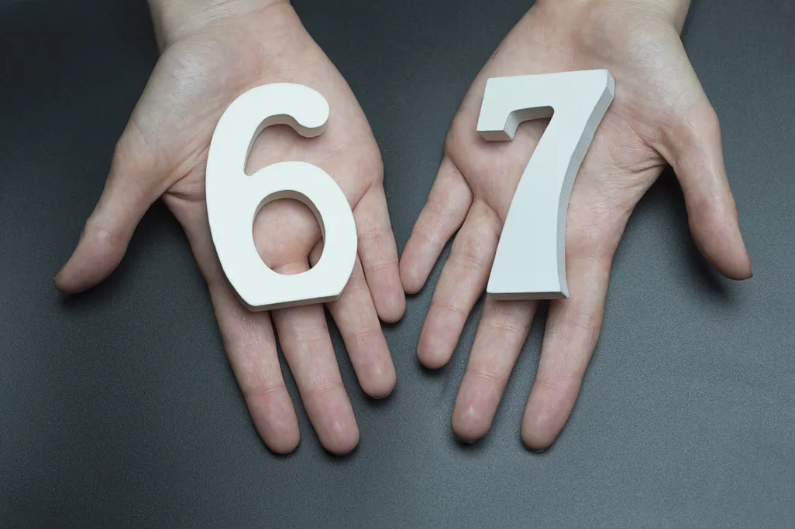
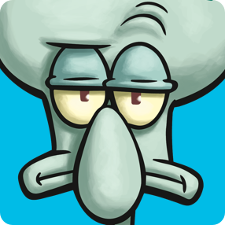
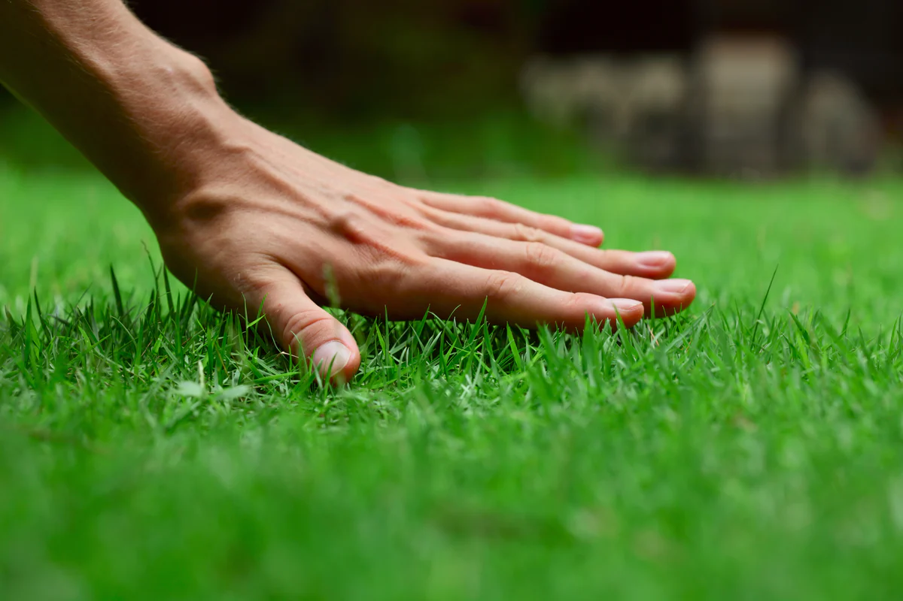
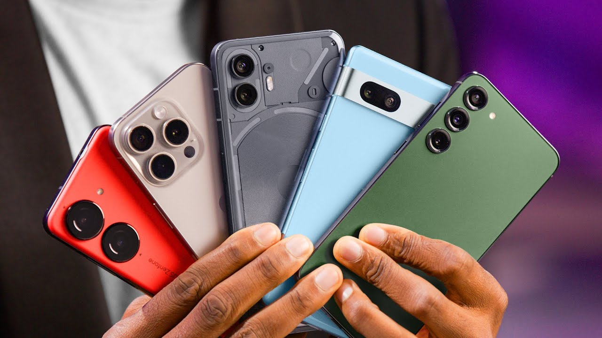
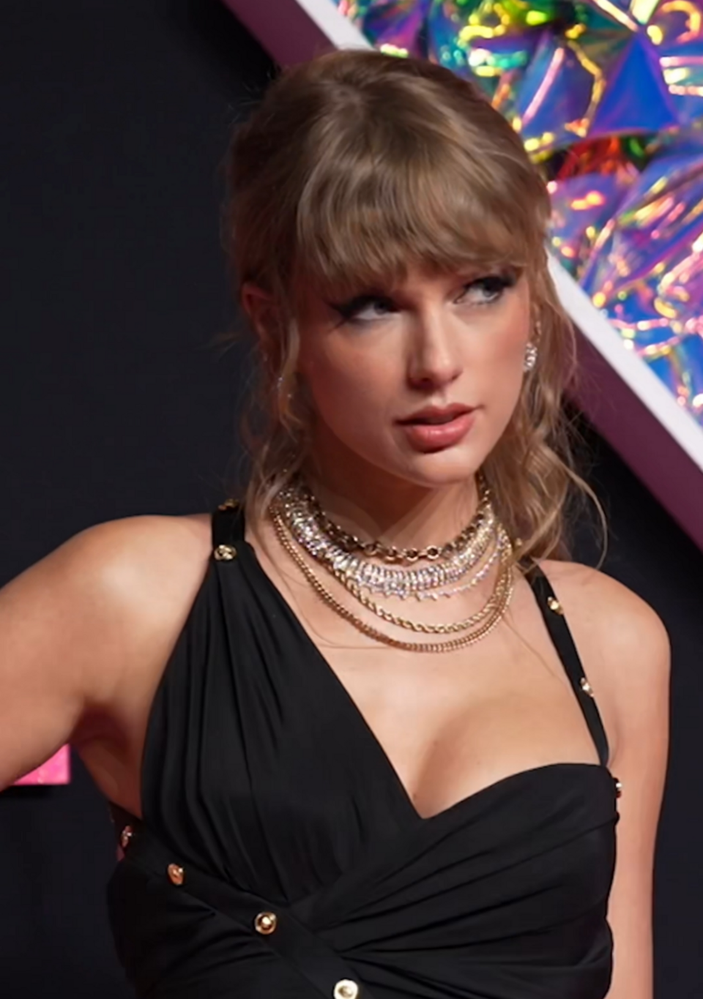
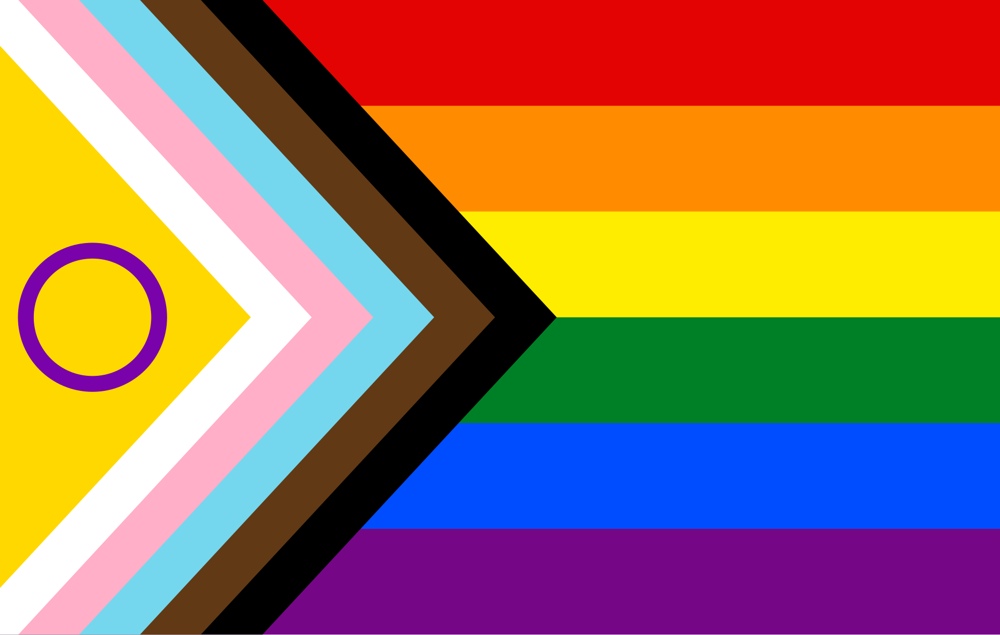
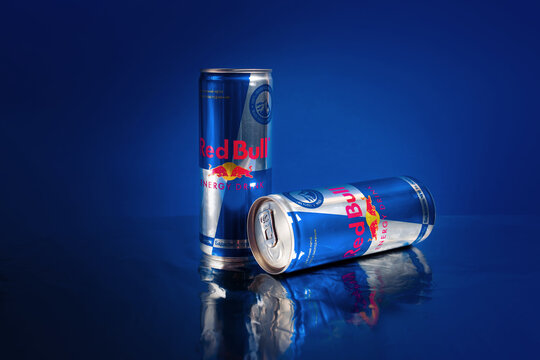
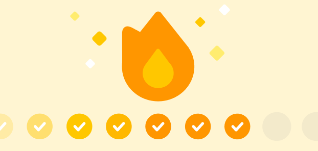

Teen Slang
|
 Six-SevenOf course when talking about slang, you have to start with the one everyone knows and hates. Six-Seven, popularizing late 2025, means a multitude of things, from the height of a basketball player to the more common definition of, nothing. |
 SigmaThough it has mostly died out, Sigma and it's endless variations had their turn in tormenting the classrooms of unsuspecting educators. It was mostly used as a filler word and served multiple diverse meanings, as long as it was 'funny' to be replacing |
 Touch GrassMerging into the standard lexicon, touching grass is relatively self explanatory. To tell someone that they need to 'touch grass' you are essentially telling them that they've spent too long online and that they need to get off the internet and go outside. |
Technology

Around early 2020, TikTok (Formerly) a Chinese short form video social media platform took a boom, and while yes adults did play their parts, Teenagers were the real trendsetters upon the platform, holding a hefty amount of control over memes and slang. Without TikTok, Teen Culture would be different from how we know it today.
Smartphones are a catalyst for change, it made being social easier and thus boosted the propagation of thoughts, ideas, and opinions. While technology is now plagued with it's own misinformation, and AI Slop, spread of humanity has allowed teens to spearhead change in their direction or show just how important that change would be.

Generative AI hit the ground running, originally used by Teenagers to cheat on their school assignments, advertised to make their lives easier. However, when adults started to use AI maliciously, Teens all around the globe realized that it was not what they wanted, and are now the biggest group against AI.
Teen Values
Mental HealthWith the advent of Social Media, Teens' mental health has only been getting worse. The Greater freedoms of expression, but with aforementioned expression a major counterculture to those in power, many teens now feel oppressed for everything about them that isn't the 'norm' and is causing lots of stress and Anxiety. |
ExpressionBecause of how much of many teens' common interactions are on social media, those who deviate from the norm aim to talk to somebody who will understand their deviation, which will cause others to express how they're feeling about that deviation, typically creating a greater sense of unity. |
HumanityWith the ever growing expansion and voracity of AI, Teens nowadays are valuing human made work and supplies being given to humans to make human made work. The bigger the rise to power AI has, the more teens are resisting it. |
Teen Symbols
TikTokDuring the 2020 pandemic Classes TikTok and it's well known Algorithm took over with plentiful features that made socialization even easier than talking to people, this shift in communications and the style it coined are something that trailblazes a new future of online communications dictated by teenagers. |
Brain rotThe short-lived meme culture taking over social medias (i.e. Six-Seven, Sigma, Jet2 Holiday, Great Meme Reset) is a short filled dopamine rush that are designed to mean nothing. These little clips devoid of much substance are the cornerstone of the current teen meme culture, used for quick laughs and annoying people over the age of 19 all the same. |
 Taylor SwiftHuge pop idol Taylor Swift, known for her carbon footprint, boyfriends, and a sense of community. Popular, especially to the generations who were raised when her name was on more headlines, Swift and her fans "Swifties" are a big symbol of the community Teenagers stand in, and how teenagers flock together. |
Teen Norms
Public display of pride in diversity

Though a common universal truth of teenagers, because of the widespread access of things like TikTok and other social medias, Teenagers have adopted a sense of pride in their differences, something that is still hard for a lot of the people in power to do.
Wildly Unhealthy things
Back in the days when it was underage drinking, of course teens will be as deviant as they can be, and if you tell them no, they're just going to do it more. Nowadays it's mostly chugging 20 Red Bulls a day and staring at their phone the rest.

Keeping Streaks

In apps like Snapchat and Duolingo, Teens have been encouraged to keep "Streaks" where they are encouraged to interact with the application every day for an indefinite amount of time. In cases like Snapchat, it is even seen as rude to break your "Snap Streak", these are mostly imposed onto teens by the multiple common apps used in order to retain attention. Apps like Finch; on the other hand, Have a streak break, encouraging you to take breaks when you need them.